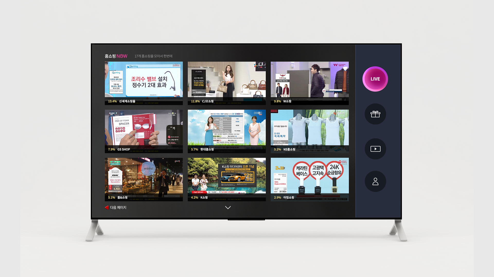
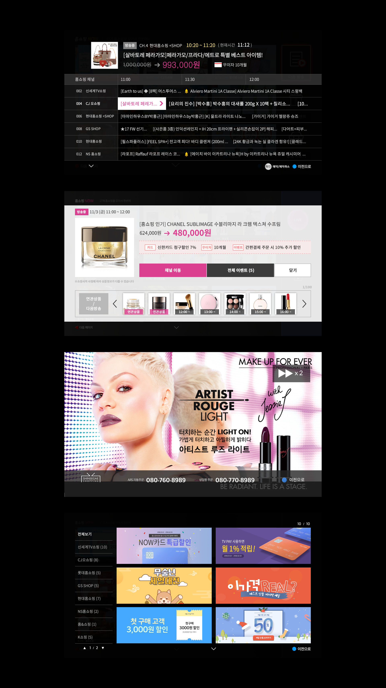

SHOPPING NOW
TV UI 디자인
DATETV UI 디자인
2018.1 ROLE
UI / UX Designer
SHOPPING NOW는 올레TV의 홈쇼핑 모음 채널이며, 실시간으로 17개의 홈쇼핑 방송을 중계합니다.
영상 시청을 방해하지않으며 편리한 상품비교에 중점을 두고 디자인되었습니다.
영상 시청을 방해하지않으며 편리한 상품비교에 중점을 두고 디자인되었습니다.

리모컨 조작 동선을 고려한 UI
리모컨 조작이라는 특수한 환경의 TV UI는 방향키로 포커스를 옴겨가는 UI를 사용합니다.
때문에 이동되는 포커스가 예상될 수 있는 직관적이고 단순한 레이아웃을 사용하며
사용자가 동선을 헤매지 않도록 본래의 TV플랫폼 UX을 고려하며 디자인했습니다.
때문에 이동되는 포커스가 예상될 수 있는 직관적이고 단순한 레이아웃을 사용하며
사용자가 동선을 헤매지 않도록 본래의 TV플랫폼 UX을 고려하며 디자인했습니다.
